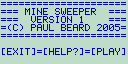
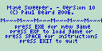
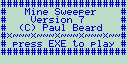
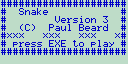

#include <stdio.h> int(main)(){int(x)=0;while(putchar((int)(x<5?(((-0.25*x-3.83)*x+14.7)*x+6.3)*x++ +80.9:((((0.99167*x-39.375)*x+612.292)*x-4668.13)*x+17474.2)*x++-25627.1))-10);}
# Find large files and directories: du -amx /|sort -t$'\t' -k1nr,1|head -100|sort -t$'\t' -k2,2 # Convert TSV files to CSV: sed 's/"/""/g;s/'$'\t''/","/g;s/^/"/;s/$/"/'
GitHub Repository github.com/paulbearddotname/basicgames
   
gpmlcli is a tool for uploading and downloading GoPro videos to and from the GoPro Media Library.
$ gpmlcli -h gpmlcli version 1.0.0 Copyright (c) 2025 Paul Beard. Website: paulbeard.name gpmlcli is a tool for uploading and downloading GoPro videos to and from the GoPro Media Library. Usage: gpmlcli [-h] COMMAND Commands: login EMAIL PASSWORD logout list [-c] find [-c] SRC... rename [-d] FROM TO delete [-d] NAME upload SRC... download NAME... Options: -h show this help -c format columns
GitHub Repository github.com/paulbearddotname/gpmlcli
lnbackup is a backup program capable of creating backup directories that mirror the source without duplicating unmodified files.
Each run results in a new backup directory named with the date and time the backup started. Each backup directory is a complete mirror of the source. Unmodified backup files are hard linked. New backup files are created as copy-on-write duplicates of source files if possible. Files are also indexed by hash to identify moved, renamed, and duplicate files.
$ lnbackup -h lnbackup version 1.4.0 Copyright (c) 2025 Paul Beard. Website: paulbeard.name lnbackup is a backup program capable of creating backup directories that mirror the source without duplicating unmodified files. Usage: lnbackup [-h] SRC_FROM DEST Options: -h show this help SRC_FROM read source list from file DEST destination directory